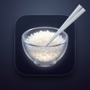

Working with AI
Unli Rice
Shared memory for your AI tools, and a To Do list of what’s still open.
- Unli RiceMac · Free · Open sourceMac App Store

Unli Rice CaptureiPhone · FreeApp Store
Working with AI
Shared memory for your AI tools, and a To Do list of what’s still open.

Unli Rice CaptureiPhone · FreeApp StorePhotos & storage
Find what’s filling your iPhone and Mac, biggest first.
Wedding planning
Guests, seating, budget and vendors on one board, with an AI concierge.
At the court
Score, server and service box for badminton and pickleball, with slow-motion replay.
Curiosity
An open atlas of 695 religious and mythic traditions.
Contact